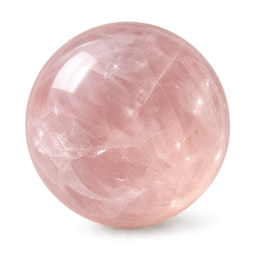

En Perle de Chemin
Utilisez Quartz rose pour matérialiser une étape précise et la distinguer de vos Perles Socles.

Douces
Prendre soin
Un rose doux qui apporte une note sensible sans affaiblir la ligne du bijou.
Utilisez Quartz rose pour matérialiser une étape précise et la distinguer de vos Perles Socles.
Selon votre palette de départ, Quartz rose peut aussi devenir une base esthétique durable.
Une pierre retirée peut revenir plus tard dans le même bracelet ou une future composition.